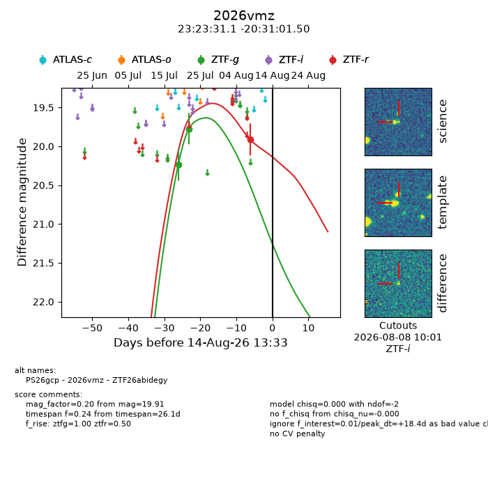
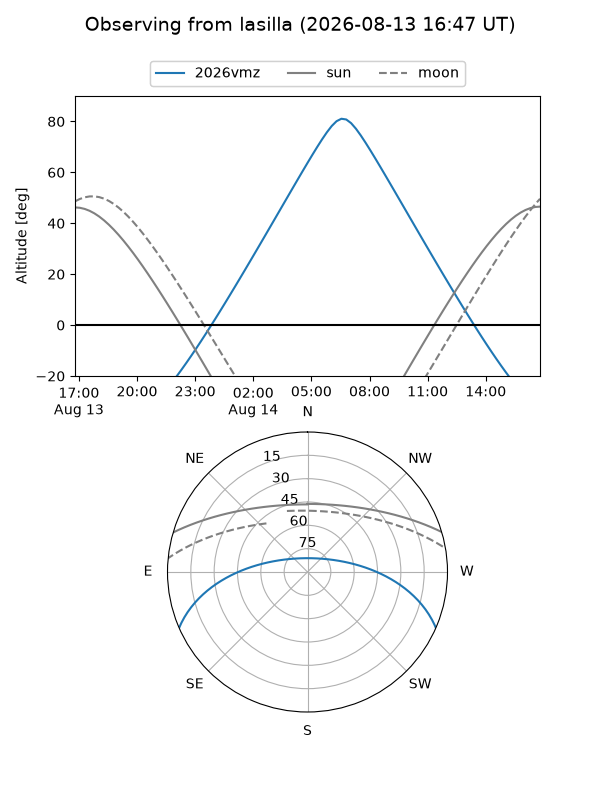
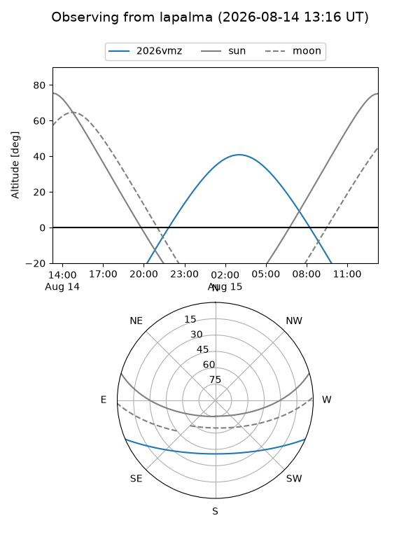
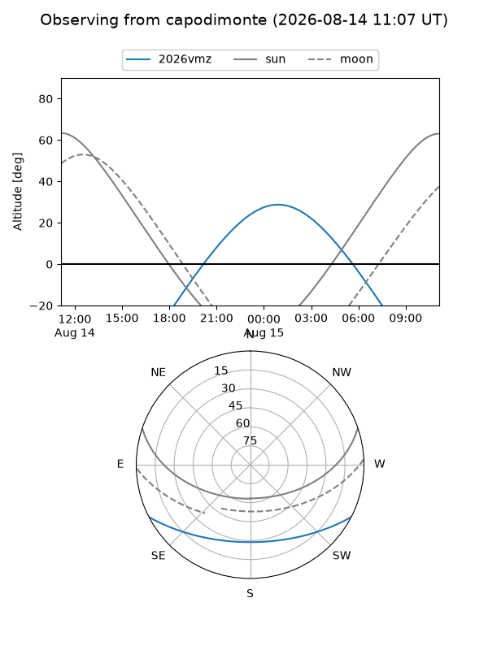
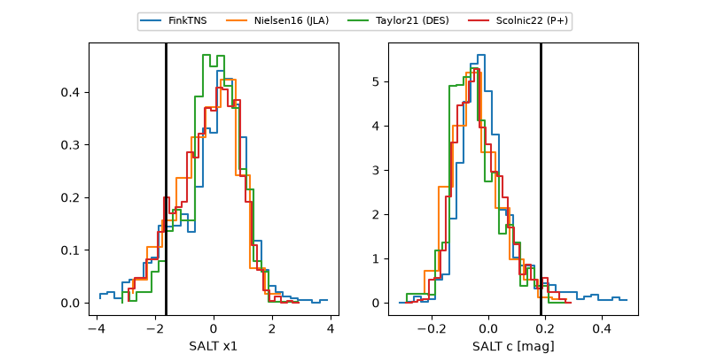

2026vmz
Target 2026vmz at 2026-08-14 13:35
Aliases and brokers:
FINK-ZTF: ztf.fink-portal.org/ZTF26abidegy
Lasair-ZTF: lasair-ztf.lsst.ac.uk/objects/ZTF26abidegy
ALeRCE-ZTF: alerce.online/object/ZTF26abidegy
YSE-PZ: ziggy.ucolick.org/yse/transient_detail/2026vmz
TNS name: wis-tns.org/object/2026vmz
Direct TNS query: direct search
alt names
ZTF26abidegy (ztf,fink_ztf)
2026vmz (tns,yse)
PS26gcp (panstarrs)
Coordinates:
equatorial (ra, dec) = 350.8797,-20.51708
equatorial (HMS+DMS) = 23:23:31.13,-20:31:01.50
galactic (l, b) = (46.4217,-68.87015)
Flags:
TNS type: nan
peak dt: +18.4
Photometry:
last ztfg=19.77, ztfr=19.91
2 ztfg, 1 ztfr detections
Lightcurve

Visibility



Additional plots
